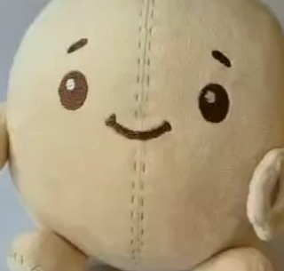
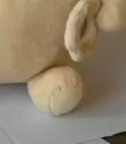

Колобок
0+1 790 ₽
Хочу купить 25–30 смРазмер линейки по смете
Видео и крупные планы


Круглый плюшевый персонаж с вышитой улыбкой и декоративным колечком. У двух ракурсов видны детали формы и фактура ткани.
Состав и характеристики
- Возраст
- 0+ · возрастная категория разработки
- Верх
- Хлопковый велюр песочного оттенка
- Наполнитель
- Холлофайбер
- Детали
- Вышитая улыбка, текстильные лапки и кольцо
Материалы по спецификации. Требование к велюру — OEKO‑TEX® STANDARD 100, класс I, или эквивалент.